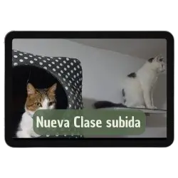

Prepara tu hogar y corazón para tu compañero
Gana confianza y conocimiento, sin importar el temperamento de tu gato.
En solo 7 día aprenderás a comprender a tu felino y crear un
hogar perfecto para él.a comprender a tu felino y crear un hogar perfecto para él.
¿Mi Primer Gato es magia? No. Es el conocimiento y la experiencia que te ayudarán a crear un hogar seguro y estimulante para tu nuevo amigo felino. Aprenderás a cuidar de tu gato con técnicas probadas y consejos prácticos, respaldados por más de 2 años de experiencia y la convivencia con más de 100 gatos
Que tu gato tenga un hogar
¿Estas perdido con la llegada de tu primer gato y no sabes por dónde empezar? ¿O ya tienes un gato y quieres mejorar su bienestar y su conducta? No estás solo, muchos hemos pasado por lo mismo. Por eso, diseñé el curso 'Mi Primer Gato', un programa transformador que te guiará paso a paso para crear un hogar feliz y saludable para tu felino. ¡Convierte la convivencia con tu gato en una experiencia increíble!
MI PRIMER GATO
Masterclass
100% online

metodologia Felina 360
Actualizaciones constante
SI ACCEDES AHORA LOGRARAS
Crear un hogar seguro
Evita accidentes domésticos que pueden poner en riesgo la vida de tu gato. Aprende a identificar y eliminar peligros potenciales en tu hogar.
Mejorar la calidad de vida de tu gato
Desde una correcta elección de alimentos hasta la creación de un entorno estimulante, nuestro curso te proporciona todas las herramientas para mejorar la calidad de vida de tu gato y fomentartodas las herramientas para mejorar la calidad de vida de tu gato y fomentar su felicidad.
Prevenir problemas de salud
¿Sabías que muchos problemas de salud en gatos son prevenibles con el conocimiento adecuado? Nuestro curso te enseña cómo mantener a tu gato en óptimas condiciones y evitar costosos viajes al veterinario.
Reducir el estres del gato
La adaptación a una transportadora y a un nuevo hogar puede ser estresante para tu felino. Con nuestras técnicas, puedes hacer estos procesos mucho más suaves y menos traumáticos.
Ahorra tiempo y dinero
Evita errores comunes que pueden resultar costosos.Con la guía correcta, puedes ahorrar en visitas innecesarias al veterinario y en productos inadecuados para tu gato.
Metodologia Felina 360 TEMARIO
1.Mitos sobre los gatos: Desmentimos creencias populares que pueden
afectar el bienestar de tu gato.
2.Elección de veterinario: Aprende a seleccionar el profesional
ideal para la salud de tu mascota.
3.Seguridad del hogar: Asegura tu hogar para prevenir accidentes y
crear un ambiente segura.
4.Adaptación a la transportadora: Técnicas para que tu gato se
sienta cómodo y seguro en su transportadora.
5.Snacks saludables: Conoce las mejores opciones de snacks para
mantener a tu gato feliz y saludable.
6.Parásitos externos e internos: Identificación, prevención y
tratamiento de parásitos comunes.
7.Platos y fuentes: La importancia de la correcta elección de platos
y fuentes para la salud de tu gato.
8.Limpieza: Consejos para mantener un entorno limpio y libre de
olores.
9.Enfermedades: Información sobre las enfermedades comunes y cómo
prevenirlas.
10.Adaptación al nuevo hogar: Facilita la transición de tu gato a un
nuevo entorno.
11.Gatificación: Cómo transformar tu hogar en un paraiso felino.
12.Elección de literas: Encuentra la litera perfecta para las
necesidades de tu gato.
Accede y ahora y conta con
Mas de 13 clases grabadas en HD y subtituladas
Este curso está diseñado para ayudarte a mejorar la calidad de vida de tu gato, cubriendo desde la elección del veterinario hasta la creación de un entorno seguro y estimulante.
Acceso ilimitado y de por vida
Este no es solo un curso, es una inversión en el bienestar y felicidad de tu gato, y en tu tranquilidad como dueño responsable. Con acceso ilimitado y de por vida, siempre tendrás las herramientas necesarias para ofrecerle a tu gato el mejor cuidado posible. ¡Inscríbete hoy y comienza este maravilloso viaje con nosotros!